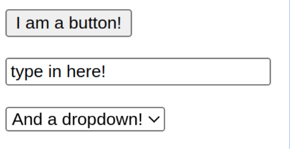
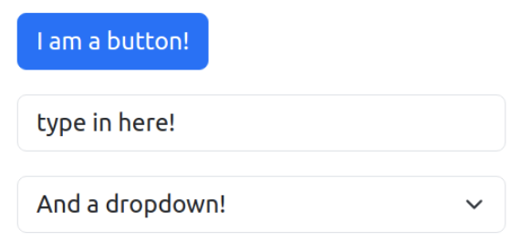
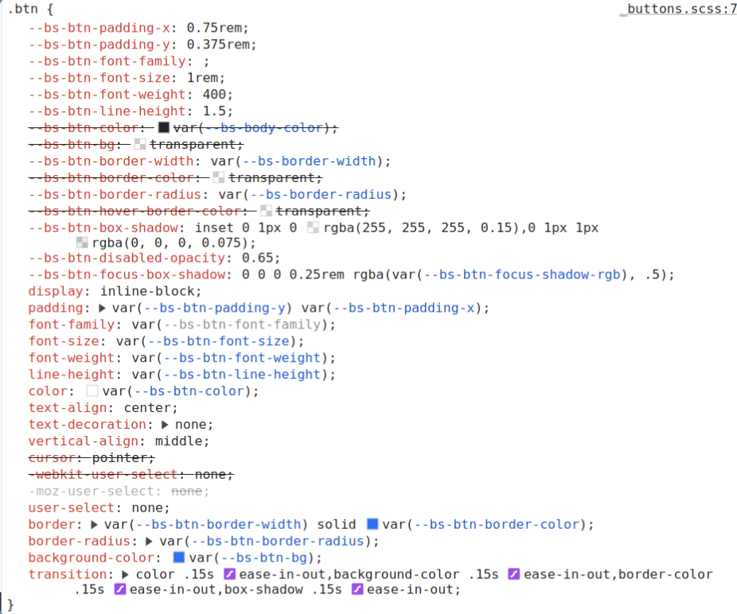

Do Now: Open up our initial activity: here
What is Bootstrap?
CSS framework --> gives us some baseline styles so we don’t have to start from scratch
In our activity today, why did the button look different even though we didn't write any CSS ourselves?
Compare
Default
Bootstrap
"I can do it myself!"
Well, you definitely could...
Bootstrap provides a consistent look and feel
Easy to use across large teams and systems
Bootstrap provides a number of components that you can use to build your site
Examples: buttons, forms, navbars, etc.
This will save you time when developing and take the focus away from building harder UI components
Let's take a look at some https://getbootstrap.com/
If you're curious about bootstrap, please come back to this activity on your own time
It is worth mentioning that Bootstrap was built when putting <divs> where you wanted was harder
It uses a 12-column grid system to help you build responsive layouts
Today, we will talk about flexbox as it is used more frequently
In the context of this class, we mean designing an application for all kinds of devices!
Certain style practices have adopted a "mobile first" approach to designing websites because of home much traffic comes from phones!
Go to your favorite website and see how they handle when you resize the browser!
Bonus: Try printing the page open dev tools to see how the page structure/styles change
Hopefully, you saw how when the page hit a certain width, something happened!
Maybe...
Media queries are a way to apply styles based on certain conditions (Like an if statement!)
They're powerful, and if you're curious, take a look at the docs
We're going to focus on querying the screen width
Example: thanks Tim
Activity: thanks again Tim!
Flexbox is a layout model that allows you to align and distribute space among items in a container
You can create rows and columns and create naturally responsive alignment of items
We must think about parent and child elements
Certain properties apply to the children vs the parent container
Let's quickly look at how to justify/align content here
Cheat SheetIn your groups, try to get through all 24 levels! Fastest group gets a prize...
Flexbox FroggyOther resources: